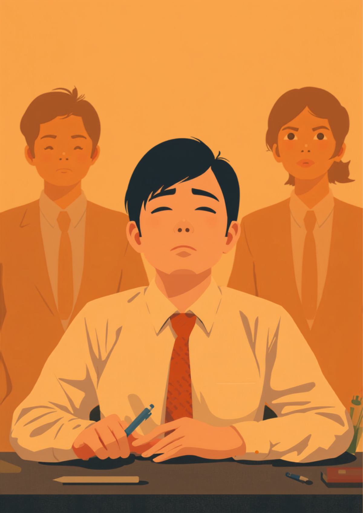
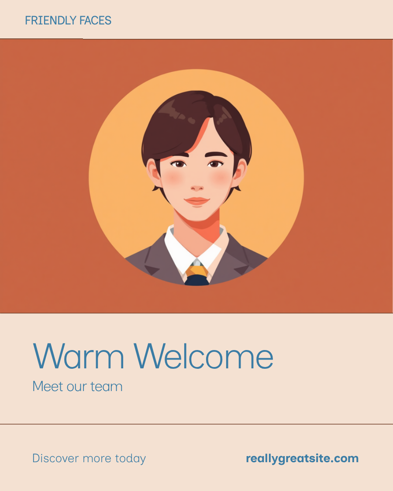

会議の後半になると、気づけば数秒だけ意識が飛んでいる。相槌を打ちながら、実はほとんど話を聞けていない。「やる気がないだけでしょ」と思われるのが一番つらい、という声を、就労支援の現場でも聞くことがあります。睡眠時無呼吸症候群（SAS）のある方の中には、夜どれだけ眠っても、体も脳もまったく休まっていないという方がいます。この記事では、SASと仕事の間で起きやすい場面と、職場でできる工夫を当事者の声をもとに整理しました（2026年8月時点の情報です）。
PR



「また寝てる」と思われるたびに、自分でも情けなくなる
「やる気がない」と誤解される、消えない眠気の正体
睡眠時無呼吸症候群は、眠っている間に呼吸が浅くなったり止まったりして、脳が何度も浅い覚醒を繰り返してしまう特性です。本人にとっては「ちゃんと寝ている」つもりでも、体や脳がほとんど休めていないことがあるとされています。ミミ
就労支援の現場で関わってきた中で、睡眠時無呼吸症候群のある方から繰り返し聞いてきた言葉があります。「眠いのは甘えだと思われて、やる気の問題にされ続けてきた」というものです。会議中にうとうとしてしまう、デスクワーク中に手が止まっている、そんな瞬間を見られるたびに、「怠けている」というレッテルが張られていくように感じる、という声もあります。
本人にとっては、どれだけ早く寝ても、休日にたっぷり眠っても、眠気がまったく消えないという感覚があるようです。しかし周りからは「夜更かしでもしているのでは」「単に体力がないだけ」に見えてしまうため、繰り返し誤解を受けやすいと言われています。
!
この記事で紹介する内容は、睡眠時無呼吸症候群のある方に見られることがある傾向の一例です。感じ方や症状の現れ方には個人差があり、すべての方に当てはまるわけではありません。気になる症状がある場合は自己判断せず、医療機関にご相談ください。
「正直言うと、会議中に意識が飛んでることに自分でも気づいてなかったんです。取引先との商談中に一瞬だけ『あれ、今何の話でしたっけ』ってなることが月に何回もあって、上司に『やる気あるのか』って言われたときはさすがに凹みました。半年くらいそれが続いて、妻に『いびきがすごいし、たまに息止まってるよ』って言われて、初めて睡眠外来に行ったんです。検査したら無呼吸が一晩に何十回もあるって言われて、正直ショックでした。今はCPAPをつけて寝てますけど、寝ても寝ても眠いっていう感覚が、あそこまで消えるとは思ってなかったです。」
40代・男性（睡眠時無呼吸症候群・営業職）
相談の一コマ

相談者
会議中にどうしても眠くなってしまって、やる気がないと思われてるのがつらいです。

ミミ
それはつらいですね。睡眠時無呼吸症候群のように、眠っている間に呼吸が浅くなったり止まったりして、深く眠れていないことが原因になっている場合もあるとされています。
相談者
検査を受けても、職場にどう伝えたらいいか分からないです。
ミミ
病名を詳しく説明する必要はなく、「治療中で、今は日中の眠気が出やすい時期です」など、対応してほしいことに絞って伝える方法が助けになる場合があります。一緒に伝え方も考えていきましょう。
睡眠時無呼吸症候群とは。眠っても体が休まらないメカニズム
睡眠時無呼吸症候群（SAS）は、眠っている間に呼吸が浅くなったり、10秒以上止まったりする状態が繰り返される特性です。呼吸が止まるたびに脳は酸素不足を感じ取って、ごく浅く覚醒するとされています。本人はほとんど気づかないほど短い覚醒でも、それが一晩に何十回、何百回と繰り返されることで、深い睡眠にたどり着けないまま朝を迎えてしまうことがあるようです。
i
睡眠時無呼吸症候群は、喉の奥が狭くなることなどによって空気の通り道がふさがれる「閉塞性」と呼ばれるタイプが多いとされています。体重や首まわりの状態だけでなく、あごの骨格など生まれつきの要因が関わっている場合もあるようです。
「いびきのことは前から言われてたんですけど、まさか自分が無呼吸症候群だとは思ってなくて。健康診断のときに首まわりのことを色々聞かれて、睡眠外来を勧められて検査したらSASでした。一番困ってるのは出張です。CPAPを持っていくと荷物がかさばるし、ホテルの部屋で装着してる音を誰かに聞かれたらどうしようって、いまだに気まずいです。同僚と同じ部屋になったことがあって、そのときは正直ちょっと寝るふりして装着をごまかしました。3年経った今でも、慣れないですね。」
30代・女性（睡眠時無呼吸症候群・経理職）
職場で起きやすい場面と、その場でできる工夫
睡眠時無呼吸症候群のある方が職場で困りやすい場面には、いくつかの傾向があるとされています。会議やデスクワークなど静かに座っている時間に眠気が強くなりやすい、集中力が続かずミスが増えやすい、朝の目覚めが重く出社時点で疲れている、といったことです。
その場でできる工夫
- 眠気が出やすい時間帯の前にカフェインを摂る、席をなるべく前方にするなど対策をしておく
- 数分だけでも目を閉じられる休憩時間を確保できないか、周囲に相談してみる
- 立って作業できる場面では、あえて座らない選択肢を取り入れる
- どうしても意識が飛んでしまったときのために、信頼できる同僚にひと言伝えておく
病名や治療の詳しい仕組みを説明する必要はありません。「治療中で、午後に眠気が出やすい時期です」など、対応してほしいことに絞って伝える方が、周囲にとっても受け止めやすいとされています。ミミ
CPAPと出張・共有スペースとの付き合い方
- 携帯用の小型CPAP機器や、宿泊先の電源・コンセント位置を事前に確認しておく
- 同室者がいる場合は、装着音や見た目について事前にひと言伝えておくと気持ちが楽になったという声もある
- 出張が多い場合は、上司や人事に「治療のため機器を携帯している」ことだけ簡潔に伝えておく方法もある
「怠けているわけじゃない」と繰り返し説明するより、具体的な場面に絞って対応をお願いする方が、周囲にとっても対応しやすいとされています。治療を続けながら、その場でできる工夫を積み重ねていく方法もあります。
治療・使える制度と、相談できる先
障害者手帳という選択肢
睡眠時無呼吸症候群単独では、身体障害者手帳の対象になりにくいとされていますが、治療を続けても心不全や呼吸不全などの合併症が残る場合は、対象になることがあります。対象になるかどうかは症状の程度や診断内容によって異なるため、詳しくは主治医や自治体の障害福祉窓口にご確認ください（2026年8月時点の情報です）。
頼れる相談先
- 睡眠外来・呼吸器内科・耳鼻咽喉科（検査や治療の相談）
- かかりつけ医（症状の相談や専門機関への紹介）
- 産業医・保健師（在職中の場合、職場での配慮の相談）
- 就労移行支援事業所（体調に合わせた働き方の相談）
睡眠時無呼吸症候群の症状の現れ方や治療方針には個人差があります。この記事の内容がそのまま当てはまるとは限らないため、実際の判断は主治医とよく相談しながら進めることをお勧めします（2026年8月時点の情報です）。
消えない眠気は、気合や根性で乗り越えるものではありません。原因を知り、治療とその場の工夫を組み合わせていくことが、遠回りに見えて一番の近道になるかもしれません。
よくある質問
Q. 睡眠時無呼吸症候群は自分で気づけますか？
いびきや呼吸の止まりは自分では気づきにくく、家族やパートナーからの指摘で分かるケースが多いとされています。日中の強い眠気や、起床時の頭痛・倦怠感が続く場合は、睡眠外来など専門機関に相談してみる方法があります（2026年8月時点の情報です）。
Q. CPAPは一生使い続けないといけませんか？
体重の変化や耳鼻科的な要因の改善によって症状が軽くなるケースもあるとされていますが、使用を続けるかどうかは検査結果や主治医の判断によります。自己判断で中断せず、定期的に医師に相談しながら進めることが勧められています。
Q. 障害者手帳の対象になりますか？
睡眠時無呼吸症候群単独では手帳の対象になりにくいとされていますが、心不全や呼吸不全など他の疾患を併せ持つ場合は身体障害者手帳の対象になることがあります。対象になるかどうかは症状の程度によって異なるため、主治医や自治体の窓口にご確認ください。
Q. 出張や外泊のときCPAPはどうすればいいですか？
携帯用の小型CPAP機器を利用する、宿泊先の電源やコンセント位置を事前に確認しておくといった対策が有効なケースがあるとされています。同室者がいる場合の音や見た目が気になるときは、事前に一言伝えておくと気持ちが楽になったという声もあります。
Q. 何科に相談すればいいですか？
睡眠外来や呼吸器内科、耳鼻咽喉科などが相談先として挙げられます。まずはかかりつけ医に相談し、必要に応じて専門の医療機関を紹介してもらう方法もあります（2026年8月時点の情報です）。
気合ではなく、原因を知ることから始まる4つのステップ
PR


一人で抱え込む前に、今の気持ちを話してみませんか
「まだ迷っている」段階でも大丈夫です。mimemimeの無料相談は、今の状況の整理から一緒に始められます。
無料で話してみる
おのざる
mimemime代表。就労支援の現場経験をもとに、障がいのある方の働く不安に寄り添う記事を執筆。